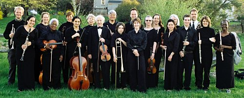

About the Orchestra

The Ithaca Community Orchestra (ICO) is a group of about 40 talented amateur musicians ranging in age from 16 to 99, and representing people from all walks of life, who have in common their love of music and enjoyment of playing together. The Orchestra supports community musical education through the rehearsal and performance of the classical orchestral repertoire, as well as music of the twentieth and twenty-first centuries. Now in its tenth season, the ICO is committed to presenting at least two public concerts a year, performances at community events and festivals, and performances at local residential institutions. The ICO is a 501(c)(3) organization; gifts to the ICO are tax deductible to the full extent permitted by law.
Board of Directors
Janet Wagner, President
Margaret Perry, Vice President
Marguerite Mizelle, Secretary
Virginia Grove, Treasurer
Elissa Cogan, Volunteer Executive Director
Barry Chester